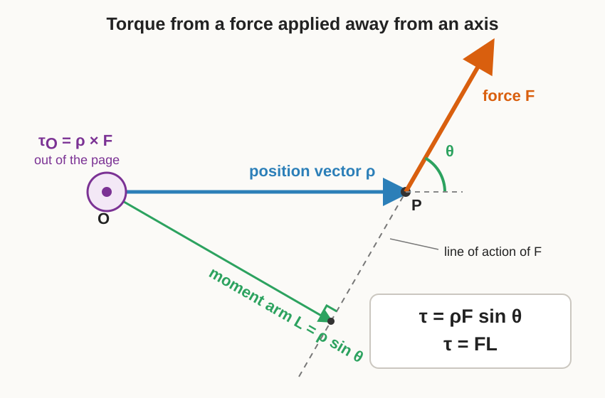
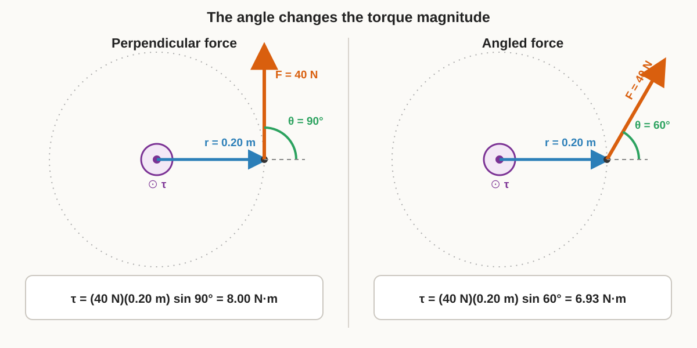

9 Dynamics, Forces, Torque, Friction, and Actuator Limits
9.1 Why this chapter matters
Kinematics predicts how a robot’s pose changes when its velocity is known, but it does not explain how that velocity is produced or how quickly it can change. Dynamics connects motion to mass, rotational inertia, external forces, and external torques. This connection is necessary for physically meaningful simulation, actuator selection, acceleration limits, braking analysis, and feedback control.
This chapter begins with straight-line motion because it exposes the central force-acceleration relation without rotational notation. Later sections extend the same reasoning to wheel torque, planar rotation, traction, friction, and actuator limits.
9.2 Prerequisites and assumptions
The reader should understand vectors and units from the linear algebra foundations chapter, coordinate frames from the geometry chapter, and derivatives and numerical integration from the kinematics and numerical integration chapter.
The first model treats the robot as a rigid body constrained to translate along a fixed straight line on level ground. The line is fixed in the world frame, so it is an inertial reference for the speeds considered here. The robot’s mass is constant, vertical motion is absent, and all forces are represented by their signed components along the line. Rotational motion, wheel inertia, slip, and changing actuator force are excluded from this first model.
9.3 1. From kinematics to dynamics
9.3.1 1.1 Position, velocity, and acceleration
Let \(t\in\mathbb R_{\geq0}\) denote continuous time in seconds. Let \(s(t)\in\mathbb R\) be the robot’s signed position along the fixed line, measured in metres. Increasing \(s\) defines the positive direction.
The signed longitudinal velocity is
\[ v(t) \mathrel{:=} \dot s(t) = \frac{ds(t)}{dt}, \]
where \(v(t)\) is measured in \(\mathrm{m\,s^{-1}}\). The signed longitudinal acceleration is
\[ a(t) \mathrel{:=} \dot v(t) = \ddot s(t) = \frac{d^2s(t)}{dt^2}, \]
where \(a(t)\) is measured in \(\mathrm{m\,s^{-2}}\). Positive acceleration means that velocity changes in the positive direction; it does not necessarily mean that the robot is moving forward. For example, a robot with \(v<0\) and \(a>0\) is moving in the negative direction while its speed decreases.
Kinematics relates the quantities through \(\dot s=v\). A dynamic model adds an equation that determines \(\dot v=a\) from physical causes.
9.3.2 1.2 Net external force
A force is an interaction that can change an object’s translational motion. Let \(n\in\mathbb N\) be the number of external forces acting on the chosen robot system, and let \(F_j(t)\in\mathbb R\) be the signed component of external force \(j\in\{1,\ldots,n\}\) along the positive line direction. Each \(F_j\) is measured in newtons, abbreviated \(\mathrm N\).
The net external force is the algebraic sum
\[ F_{\mathrm{net}}(t) \mathrel{:=} \sum_{j=1}^{n}F_j(t), \]
where \(F_{\mathrm{net}}(t)\in\mathbb R\) is also measured in newtons. Forces pointing in the positive direction have positive components, while forces pointing in the negative direction have negative components. Internal forces between parts included inside the chosen robot system do not appear separately in this whole-system balance because they occur in equal-and-opposite pairs.
For a driven ground robot, the forward force on the robot is the traction force exerted by the ground at the wheel contacts. Motor torque helps create this contact force, but motor torque and longitudinal force are different physical quantities and have different units.
9.3.3 1.3 Newton’s second law and the forward-dynamics equation
Let \(m\in\mathbb R_{>0}\) be the robot’s constant mass in kilograms. Newton’s second law for translation along the line is
\[ F_{\mathrm{net}}(t)=m a(t). \]
Substituting \(a=\dot v=\ddot s\) gives
\[ F_{\mathrm{net}}(t) = m\dot v(t) = m\ddot s(t). \]
Because \(m>0\), division by mass gives the forward-dynamics equation
\[ \boxed{ a(t) = \dot v(t) = \frac{F_{\mathrm{net}}(t)}{m} }. \]
Here, forward dynamics means calculating acceleration from the current physical model and the applied forces. In this simple constant-mass model, the acceleration depends only on net force and mass. The dimensional check is
\[ \frac{\mathrm N}{\mathrm{kg}} = \frac{\mathrm{kg\,m\,s^{-2}}}{\mathrm{kg}} = \mathrm{m\,s^{-2}}, \]
which matches the unit of acceleration.
If a nonnegative drive-force magnitude \(F_{\mathrm{drive}}\) acts forward and a nonnegative resistance-force magnitude \(F_{\mathrm{resist}}\) acts backward, then their signed sum is
\[ F_{\mathrm{net}} = F_{\mathrm{drive}}-F_{\mathrm{resist}}, \]
so
\[ a = \frac{F_{\mathrm{drive}}-F_{\mathrm{resist}}}{m}. \]
This equation shows why a velocity command cannot change the physical velocity instantaneously: finite forces acting on positive mass produce finite acceleration.
9.3.4 1.4 Constant-force motion over one interval
Suppose \(F_{\mathrm{net}}\) and \(m\) remain constant during the interval from sample time \(t_k\) to \(t_{k+1}=t_k+\Delta t\), where \(\Delta t>0\) is measured in seconds. Define \(s_k\mathrel{:=}s(t_k)\) and \(v_k\mathrel{:=}v(t_k)\). The acceleration is constant and equals
\[ a=\frac{F_{\mathrm{net}}}{m}. \]
For elapsed time \(\tau\in[0,\Delta t]\), integrating \(\dot v=a\) from \(0\) to \(\tau\) gives
\[ v(t_k+\tau)=v_k+a\tau. \]
Setting \(\tau=\Delta t\) gives the exact constant-force velocity update
\[ v_{k+1} = v_k + \frac{F_{\mathrm{net}}}{m}\Delta t. \]
Integrating \(\dot s(t_k+\tau)=v_k+a\tau\) over the same interval gives
\[ \begin{aligned} s_{k+1} &= s_k+ \int_0^{\Delta t}(v_k+a\tau)\,d\tau\\ &= s_k+v_k\Delta t+\frac{1}{2}a\Delta t^2\\ &= s_k+v_k\Delta t+ \frac{F_{\mathrm{net}}}{2m}\Delta t^2. \end{aligned} \]
These updates are exact only under the stated one-dimensional, constant-mass, and constant-net-force assumptions.
9.3.5 1.5 Worked example
Consider a robot with mass \(m=20\,\mathrm{kg}\), forward traction magnitude \(F_{\mathrm{drive}}=30\,\mathrm N\), and backward resistance magnitude \(F_{\mathrm{resist}}=10\,\mathrm N\). Its net force and acceleration are
\[ F_{\mathrm{net}} = 30-10 = 20\,\mathrm N, \]
\[ a = \frac{20}{20} = 1\,\mathrm{m\,s^{-2}}. \]
If \(s_k=0\,\mathrm m\), \(v_k=0\,\mathrm{m\,s^{-1}}\), and \(\Delta t=2\,\mathrm s\), then
\[ v_{k+1} = 0+(1)(2) = 2\,\mathrm{m\,s^{-1}}, \]
and
\[ s_{k+1} = 0+(0)(2)+\frac{1}{2}(1)(2^2) = 2\,\mathrm m. \]
The example predicts motion only along the fixed line. It does not yet explain how motor torque becomes traction, how much traction the ground can support, or how wheel and chassis rotation affect the result.
9.3.6 Quick test A
- In one sentence each, distinguish kinematics from dynamics.
- Define \(s\), \(v\), \(a\), \(m\), and \(F_{\mathrm{net}}\), including units.
- Starting from \(F_{\mathrm{net}}=ma\), derive \(\dot v=F_{\mathrm{net}}/m\) and state why division by \(m\) is valid.
- A \(10\,\mathrm{kg}\) robot experiences \(18\,\mathrm N\) forward and \(3\,\mathrm N\) backward. Find its acceleration.
- With the same net force, what happens to acceleration if mass doubles?
- Name two assumptions that must hold for the constant-force position update to be exact.
9.3.7 Quick test A answers and hints
- Kinematics relates motion variables without modelling their physical causes; dynamics relates forces and torques to acceleration and motion.
- \(s\) is signed position in metres, \(v=\dot s\) is signed velocity in \(\mathrm{m\,s^{-1}}\), \(a=\dot v\) is signed acceleration in \(\mathrm{m\,s^{-2}}\), \(m>0\) is mass in kilograms, and \(F_{\mathrm{net}}\) is the signed sum of external force components in newtons.
- Substitute \(a=\dot v\) into \(F_{\mathrm{net}}=ma\) and divide both sides by the strictly positive mass \(m\).
- \(F_{\mathrm{net}}=18-3=15\,\mathrm N\), so \(a=15/10=1.5\,\mathrm{m\,s^{-2}}\).
- Acceleration halves because \(a=F_{\mathrm{net}}/m\).
- Examples include one-dimensional translation, constant mass, constant net force during the interval, and validity of the rigid-body model in an inertial frame.
9.4 2. From motor torque to wheel traction
9.4.1 2.1 Torque and its units
Torque, also called the moment of a force, is a vector quantity that represents the tendency of a force to rotate a body about a chosen point or axis. Torque is not a separate kind of force: it depends on the applied force and where that force acts.
Choose a point \(O\) on the rotation axis. Let \(\boldsymbol\rho\in\mathbb R^3\) be the position vector from \(O\) to the point where the force is applied, measured in metres, and let \(\mathbf F\in\mathbb R^3\) be the applied force expressed in the same coordinate frame, measured in newtons. The torque about \(O\) is
\[ \boxed{ \boldsymbol\tau_O \mathrel{:=} \boldsymbol\rho\times\mathbf F }, \]
where \(\times\) denotes the three-dimensional vector cross product and \(\boldsymbol\tau_O\in\mathbb R^3\) is measured in newton-metres, written \(\mathrm{N\,m}\). If \(\boldsymbol\rho=[\rho_x\;\rho_y\;\rho_z]^{\mathsf T}\) and \(\mathbf F=[F_x\;F_y\;F_z]^{\mathsf T}\), then the cross product is calculated as
\[ \boldsymbol\rho\times\mathbf F = \begin{bmatrix} \rho_yF_z-\rho_zF_y\\ \rho_zF_x-\rho_xF_z\\ \rho_xF_y-\rho_yF_x \end{bmatrix}. \]
The order of the cross product matters: \(\mathbf F\times\boldsymbol\rho=-\boldsymbol\tau_O\).
The torque vector is perpendicular to the plane containing \(\boldsymbol\rho\) and \(\mathbf F\). Its direction follows the right-hand rule: curl the fingers of the right hand from \(\boldsymbol\rho\) toward \(\mathbf F\) through the smaller angle, and the thumb points in the direction of \(\boldsymbol\tau_O\).
Figure Figure 9.1 shows the position vector, applied force, angle, perpendicular moment arm, and out-of-page torque direction in one geometric construction.

Let \(\rho\mathrel{:=}\lVert\boldsymbol\rho\rVert_2\) be the distance from \(O\) to the force application point in metres, let \(F\mathrel{:=}\lVert\mathbf F\rVert_2\) be the force magnitude in newtons, and let \(\theta\in[0,\pi]\) be the angle from \(\boldsymbol\rho\) to \(\mathbf F\). The cross-product magnitude satisfies
\[ \begin{aligned} \lVert\boldsymbol\rho\times\mathbf F\rVert_2^2 &= \lVert\boldsymbol\rho\rVert_2^2 \lVert\mathbf F\rVert_2^2 - (\boldsymbol\rho^{\mathsf T}\mathbf F)^2\\ &= \rho^2F^2-\rho^2F^2\cos^2\theta\\ &= \rho^2F^2\sin^2\theta. \end{aligned} \]
Taking the nonnegative square root gives the torque magnitude
\[ \boxed{ \tau \mathrel{:=} \lVert\boldsymbol\tau_O\rVert_2 = \rho F\sin\theta }. \]
Only the component of force perpendicular to \(\boldsymbol\rho\) contributes to the torque magnitude. Equivalently, define the perpendicular moment arm
\[ L \mathrel{:=} \rho\sin\theta, \]
where \(L\geq0\) is the shortest distance in metres from \(O\) to the force’s line of action. The line of action is the infinite line through the application point in the direction of \(\mathbf F\). Substitution gives the scalar formula
\[ \boxed{ \tau=FL }. \]
Thus \(\tau=FL\) is not a different torque law; it is the magnitude of the cross-product law written using the perpendicular moment arm. If \(\boldsymbol\rho\) and \(\mathbf F\) are perpendicular, then \(\theta=\pi/2\), \(L=\rho\), and \(\tau=\rho F\). If they are parallel or antiparallel, then \(\sin\theta=0\) and the torque is zero.
Figure Figure 9.2 holds radius and force magnitude constant while changing only \(\theta\). The angled force produces less torque because only its component perpendicular to the radius contributes.

If \(\mathbf e_a\in\mathbb R^3\) is a unit vector along a chosen axis, the signed scalar torque about that axis is the projection
\[ \tau_a \mathrel{:=} \mathbf e_a^{\mathsf T}\boldsymbol\tau_O. \]
Positive or negative \(\tau_a\) indicates which rotational direction the torque acts about the selected axis. Although torque and energy both have dimensions of force times distance, torque is a vector rotational action, whereas energy is a scalar quantity.
For a wheel of radius \(r\), the position vector from the axle to the ground contact is perpendicular to the longitudinal traction force, so \(L=r\) and the contact-torque magnitude is \(rF\). This geometry is the origin of the commonly used wheel relation \(F=\tau/r\), but applying it to a driven wheel requires the signed rotational balance derived next.
9.4.2 2.2 The wheel rotational balance
Let \(i\in\{L,R\}\) identify the left or right drive wheel. Use the same sign convention as the kinematics chapter: \(\dot\phi_i>0\) means that wheel \(i\) rotates in the direction that rolls the robot forward. Its angular acceleration is \(\ddot\phi_i=d\dot\phi_i/dt\), measured in \(\mathrm{rad\,s^{-2}}\).
Let \(\tau_i\in\mathbb R\) be the signed drive torque applied at the axle of wheel \(i\), measured in \(\mathrm{N\,m}\), with positive torque acting in the positive wheel-rotation direction. Let \(F_i\in\mathbb R\) be the signed longitudinal force exerted by the ground on wheel \(i\), measured in newtons, with \(F_i>0\) pointing forward. This ground-contact force is called the wheel’s traction force.
Let \(I_i\in\mathbb R_{>0}\) be the wheel’s mass moment of inertia about its axle, measured in \(\mathrm{kg\,m^2}\). A mass moment of inertia quantifies resistance to angular acceleration about a specified axis; it is the rotational counterpart of mass in translational dynamics.
The positive axle torque tends to increase \(\dot\phi_i\). The moment of a positive traction force about the axle acts in the opposite rotational direction, so the signed net torque about the axle is
\[ \tau_{\mathrm{net},i} = \tau_i-rF_i. \]
Newton’s second law for rotation states that net torque equals mass moment of inertia times angular acceleration. Therefore,
\[ \boxed{ \tau_i-rF_i = I_i\ddot\phi_i }. \]
Solving this balance for traction gives
\[ \boxed{ F_i = \frac{\tau_i-I_i\ddot\phi_i}{r} }. \]
The wheel must use part of the applied torque to accelerate its own rotational inertia. If wheel inertia is negligible or \(\ddot\phi_i\) is sufficiently small, the balance reduces to the quasi-static approximation
\[ \boxed{ F_i\approx\frac{\tau_i}{r} }. \]
Here, quasi-static means that the wheel’s rotational-inertia term is small enough to neglect in the torque balance; it does not mean that the robot’s translational acceleration must be zero. The dimensional check is
\[ \frac{\mathrm{N\,m}}{\mathrm m} = \mathrm N, \]
which matches the unit of traction force.
9.4.3 2.3 Combining the two drive wheels
The motor torques are internal interactions when the robot, motors, and wheels are treated as one system. The longitudinal forces exerted by the ground are external forces, so they accelerate the whole robot. During straight forward driving, assume \(F_L\geq0\) and \(F_R\geq0\). Their total nonnegative drive-force magnitude is
\[ F_{\mathrm{drive}} = F_L+F_R. \]
Under the quasi-static wheel approximation,
\[ F_{\mathrm{drive}} \approx \frac{\tau_L+\tau_R}{r}. \]
If \(F_{\mathrm{resist}}\geq0\) is the magnitude of all backward longitudinal resistance included in the model, the chassis acceleration from Section 1 becomes
\[ a \approx \frac{1}{m} \left( \frac{\tau_L+\tau_R}{r} -F_{\mathrm{resist}} \right). \]
This equation assumes straight motion and does not describe yaw acceleration caused by unequal wheel torques. It also assumes that the wheel-ground contacts can supply the calculated traction without slipping.
9.4.4 2.4 Ideal gearing
An electric motor often rotates faster and produces less torque than the wheel requires, so a reduction gearbox is placed between the motor and wheel. Let \(G>1\) be the dimensionless reduction ratio, let \(\dot\phi_m\) and \(\tau_m\) be the motor-shaft angular speed and torque, and let \(\dot\phi_w\) and \(\tau_w\) be the wheel-side angular speed and torque. Choose the positive motor and wheel shaft directions so that positive motor rotation produces positive wheel rotation through the transmission.
For an ideal lossless gearbox,
\[ \dot\phi_w = \frac{\dot\phi_m}{G}. \]
Mechanical rotational power is \(P=\tau\dot\phi\), measured in watts, where \(1\,\mathrm W=1\,\mathrm{N\,m\,s^{-1}}\). Conservation of power for the ideal gearbox gives
\[ \tau_m\dot\phi_m = \tau_w\dot\phi_w. \]
Substituting \(\dot\phi_m=G\dot\phi_w\) and cancelling the nonzero wheel speed gives
\[ \tau_w=G\tau_m. \]
Thus an ideal reduction gearbox divides angular speed by \(G\) and multiplies torque by \(G\). If \(\eta\in(0,1]\) is a dimensionless efficiency representing power losses for forward motor-to-wheel power flow, a simple non-ideal approximation is
\[ \tau_w=\eta G\tau_m. \]
Combining this approximation with negligible wheel rotational inertia gives
\[ F \approx \frac{\eta G\tau_m}{r}. \]
This expression is a demanded traction force, not a guarantee that the ground contact can produce it. Gear losses, bearing friction, motor-current limits, wheel inertia, and the wheel-ground friction limit can all reduce the realised motion.
9.4.5 2.5 Worked example
Consider two identical drive wheels with radius \(r=0.10\,\mathrm m\). Suppose each wheel receives axle torque \(\tau_L=\tau_R=1.2\,\mathrm{N\,m}\), and neglect wheel rotational inertia and drivetrain losses. Each wheel’s predicted traction is
\[ F_L=F_R = \frac{1.2}{0.10} = 12\,\mathrm N. \]
The total drive force is therefore
\[ F_{\mathrm{drive}} = 12+12 = 24\,\mathrm N. \]
For robot mass \(m=20\,\mathrm{kg}\) and backward resistance magnitude \(F_{\mathrm{resist}}=4\,\mathrm N\), the predicted acceleration is
\[ a = \frac{24-4}{20} = 1\,\mathrm{m\,s^{-2}}. \]
This result remains valid only while the assumed torques are available and both wheel contacts roll without longitudinal slip.
9.4.6 Quick test B
- Define torque, moment arm, mass moment of inertia, and traction force, including units.
- Starting from \(\tau_i-rF_i=I_i\ddot\phi_i\), solve for \(F_i\).
- State the approximation required to use \(F_i\approx\tau_i/r\).
- Why does the ground-contact force, rather than the internal motor torque by itself, appear in the whole-robot translational force balance?
- An ideal gearbox has \(G=20\), motor torque \(\tau_m=0.15\,\mathrm{N\,m}\), and wheel radius \(r=0.06\,\mathrm m\). Neglecting inertia and losses, calculate the wheel torque and demanded traction force.
- Why can the demanded force \(\tau_w/r\) differ from the traction force realised on the ground?
9.4.7 Quick test B answers and hints
- Torque is a rotational action about an axis in \(\mathrm{N\,m}\); the moment arm is the perpendicular axis-to-line-of-action distance in metres; mass moment of inertia measures resistance to angular acceleration about an axis in \(\mathrm{kg\,m^2}\); and traction is the longitudinal ground-contact force on the wheel in newtons.
- Move \(I_i\ddot\phi_i\) to the other side and divide by \(r>0\) to obtain \(F_i=(\tau_i-I_i\ddot\phi_i)/r\).
- The wheel rotational-inertia term \(I_i\ddot\phi_i\) must be negligible relative to the applied torque, and omitted drivetrain losses must also be acceptably small.
- Motor torque transfers forces internally among the motor, wheel, and chassis; the ground exerts the external longitudinal force that changes the momentum of the whole robot.
- \(\tau_w=G\tau_m=(20)(0.15)=3.0\,\mathrm{N\,m}\) and \(F=\tau_w/r=3.0/0.06=50\,\mathrm N\).
- The wheel may need torque to accelerate its own inertia, the drivetrain has losses and limits, and the contact may slip when the demanded traction exceeds the available friction.
9.5 References
- Kevin M. Lynch and Frank C. Park, Modern Robotics: Mechanics, Planning, and Control, Chapter 8, especially Sections 8.1, 8.2, and 8.9.
- Karl J. Åström and Richard M. Murray, Feedback Systems: An Introduction for Scientists and Engineers, Chapter 3.